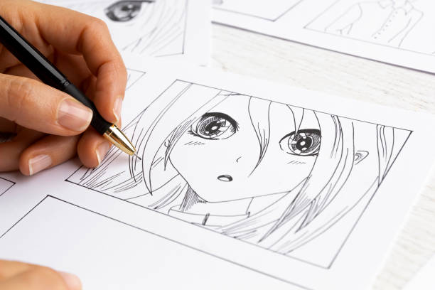
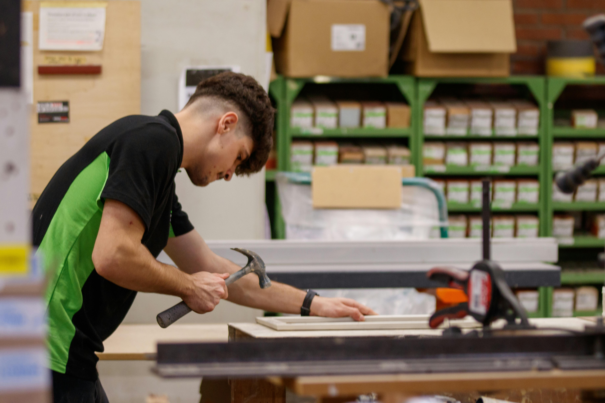

À propos de moi
Bonjour ! Je suis Rayann Tenda, étudiant en L1 Informatique à l’ULCO.
Je partage ma passion pour l’informatique à travers des projets et idées qui allient créativité et utilité.
Mon objectif est de proposer des solutions originales tout en restant fidèle à mes valeurs : créativité, rigueur, collaboration.
Ce site est un espace d’inspiration et de partage. Que vous soyez curieux·se ou intéressé·e par une collaboration, n’hésitez pas à me contacter.
Liens sociaux
GitHub LinkedInMes projets
Liste des projets

Projets techniques

Dessinarium

Projet général